Villagers
Villagers do the work on your table, and most of the fighting.
Workers
A  Villager works on whatever it's stacked on and fights when it has to. It starts with 5 health and 1 attack. Right-click a Villager to rename it: a book appears in your hand, so write the name on the first page and press Done.
Villager works on whatever it's stacked on and fights when it has to. It starts with 5 health and 1 attack. Right-click a Villager to rename it: a book appears in your hand, so write the name on the first page and press Done.
Gear Slots
Hover a Villager, 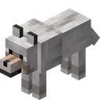 Iron Golem, or
Iron Golem, or
- Weapon or tool
- Armor
- Talisman
Specialists
A Villager's tool or weapon gives them a job.
| Give them | Job | What changes |
|---|---|---|
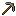 Stone Pickaxe,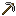 Iron Pickaxe, Diamond Pickaxe, and Diamond Pickaxe, and  Netherite Pickaxe Netherite Pickaxe | Miner | Mines twice as fast |
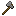 Stone Axe and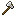 Iron Axe | Lumberjack | Chops twice as fast |
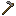 Stone Hoe | Farmer | Farms twice as fast |
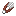 Shears | Shepherd | Tends animals twice as fast |
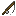 Fishing Rod | Fisher | Fishes twice as fast |
| Wooden Sword, 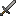 Stone Sword,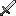 Iron Sword,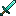 Diamond Sword, and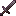 Netherite Sword | Swordsman | Hits harder and is tougher |
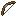 Bow, Crossbow, and Crossbow, and  Trident Trident | Archer | Shoots from range |
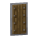 Shield and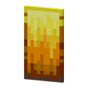 Wildfire Shield | Guard | Draws attacks and blocks some |
 Mace Mace | Brute | Hits everything around the target |
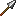 Iron Spear | Lancer | Hits from further away |
Weapons
| Weapon | Attack | What it does |
|---|---|---|
| Wooden Sword | +1 | Drop it on a villager, golem, or wolf: +1 attack. Villagers become Swordsmen. |
| Stone Sword | +2 | Drop it on a villager, golem, or wolf: +2 attack. Villagers become Swordsmen. |
| Iron Sword | +3 | Drop it on a villager, golem, or wolf: +3 attack. Villagers become Swordsmen. |
 Evocation Staff Evocation Staff | +2 | Legendary. Every third hit sends a line of fangs at the target. |
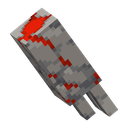 Redstone Awakener | +3 | A Redstone Golem's fist. Every third hit calls a Friendly Cube to fight beside you. |
| Diamond Sword | +5 | Drop it on a villager, golem, or wolf: +5 attack. Villagers become Swordsmen. |
| Bow | +2 | Give it to a villager to make them an Archer who shoots from range. |
| Crossbow | +3 | Slow but strong. Makes an Archer whose bolts pierce a second enemy. |
| Shield | – | Makes a Guard: draws enemy attacks and blocks some of them. |
| Iron Spear | +3 | Makes a Lancer who can hit from a little further away. |
| Mace | +5 | Makes a Brute. Slow swings that hit everything around the target. |
| Trident | +4 | A thrown weapon. Makes an Archer who hits hard from range. |
| Wildfire Shield | – | Blocks like a Shield, with +2 health. |
| Netherite Sword | – | The strongest weapon in the game. |
Armor
| Armor | What it does |
|---|---|
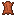 Leather Tunic | Armor. Whoever wears it gets 2 more health. |
| Iron Chestplate | Armor. Whoever wears it gets 4 more health. |
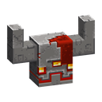 Monstrosity Helmet | +4 health, takes 1 less damage from every hit and deals 3 back to attackers. |
| Diamond Chestplate | Armor. Whoever wears it gets 6 more health. |
| Golden Helmet | Piglins won't attack the villager wearing it. |
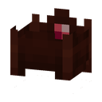 Wildfire Crown | +3 health. Blazes ignore whoever wears it. |
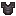 Netherite Chestplate | The toughest armor in the game. |
Talismans
A talisman goes in the third slot.
| Talisman | What it does |
|---|---|
| Bone | +1 damage against the undead |
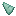 Prismarine Shard | Enemies that hit the carrier get hurt |
| Echo Shard | Each hit also strikes another enemy |
 Pumpkin Pumpkin | The carrier can't be blinded |
 Totem of Undying Totem of Undying | The carrier survives one deadly blow |
 Clock Clock | The carrier works a little faster |
 Compass Compass | The carrier explores twice as fast |
 Rabbit's Foot Rabbit's Foot | The carrier dodges more attacks |
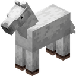 Horse | Doubles the carrier's work speed on nodes |
| Blaze Charm | A talisman. The villager carrying it takes no fire damage from Ghasts, Blazes or the Wildfire. |
 Gilded Charm Gilded Charm | Calms every Piglin on the table |
Potions
Drop a potion on a Villager to use it. Healing heals 4, and Regeneration heals 1 a second for 30 seconds. Swiftness makes it work twice as fast, Strength adds attack, Night Vision stops blinding, and Water Breathing stops Guardian fatigue, all until the next supper. Fire Resistance stops fire damage for 3 days. You can also send a potion home in a Bundle.
Enchanting
Stack a Villager, Lapis Lazuli, and a weapon or armor on an Enchanting Table. Weapons get Sharpness or their own kind, worth +1 attack per level. Armor gets Protection, +1 health per level, or Fire Protection against fire attacks. Enchant again to reach level III. The enchantment stays on the card, and a Bundle exports it as the real enchanted item.
Levels
Villagers earn experience from work and fights, ranking up from Novice to Apprentice, Journeyman, Expert, and Master. The badge in the card's corner shows their rank. Each rank adds health, and Journeymen and Masters work faster.
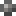
Novice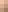
Apprentice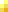
Journeyman- Expert
- Master
Babies
Two Villagers on a House make a 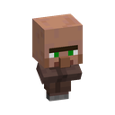
 Villager5
Villager5Uses up Sweet Berries.
Learned by getting your first House.
Uses up Cooked Porkchop.
Learned by getting your first House.

Golems, Wolves, and Piglins
An 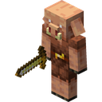Iron Golem can't work, but it hits very hard: 20 health and 5 attack. A Wolf is a loyal fighter with 8 health and 3 attack. Both can carry gear. On the Nether table, give a
A  Copper Golem doesn't fight. It walks loose cards to a matching or empty barrel, 8 at a time.
Copper Golem doesn't fight. It walks loose cards to a matching or empty barrel, 8 at a time.


Uses up Iron Ingot and Pumpkin.
Learned from the  Iron Golem Idea.
Iron Golem Idea.
Uses up Copper Block and Pumpkin.
Learned by getting your first  Copper Block.
Copper Block.
Healing and Reviving
Drop food on a hurt fighter to heal them, even in the middle of a fight. A 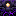 Golden Apple heals them fully. Right-click a Totem of Undying to bring back a fallen villager, or give it to a fighter as a talisman so they survive one deadly blow. A
Golden Apple heals them fully. Right-click a Totem of Undying to bring back a fallen villager, or give it to a fighter as a talisman so they survive one deadly blow. A  Glowstone Dust brings back a villager who falls on the Nether table, but it explodes on the overworld table.
Glowstone Dust brings back a villager who falls on the Nether table, but it explodes on the overworld table.